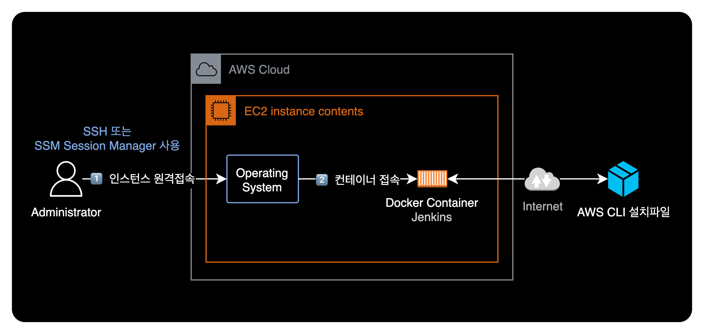
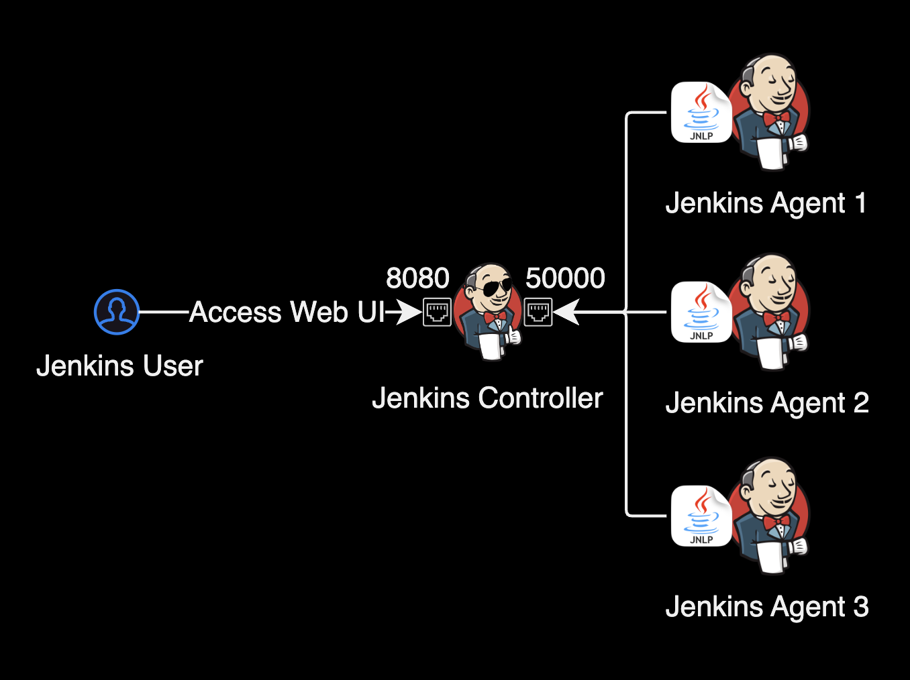

Jenkins Container with awscli
개요
Jenkins 도커 컨테이너에 AWS CLI를 설치하는 방법을 소개합니다.

환경
EC2 인스턴스
- CPU 아키텍처 : ARM64 (aarch64)
- Subnet : Jenkins 컨테이너가 구동되고 있는 EC2 인스턴스는 현재 NAT Gateway를 타고 인터넷으로 아웃바운드가 가능한 Private Subnet에 위치합니다.
Docker 이미지
- 컨테이너 이미지 : jenkins/jenkins:2.402-jdk11
- 컨테이너 OS : Debian 11.6
Jenkins 구성
컨테이너 실행 방법
로컬 환경에서 Jenkins 컨테이너를 실행하는 명령어는 다음과 같습니다.
JENKINS_VERSION="2.402-jdk11"
docker run -d \
-p 8080:8080 \
-p 50000:50000 \
--name jenkins \
jenkins/jenkins:${JENKINS_VERSION}
Jenkins 사용 포트
Jenkins 컨테이너가 기본적으로 사용하는 중요 포트는 다음과 같습니다.
| Proto | Port | Description |
|---|---|---|
| TCP | 8080 |
Web UI: Jenkins Console port |
| TCP | 50000 |
TCP Agent Listener Port: default JNLP agent port |

Jenkins는 에이전트(Agent)라고 불리는 원격 빌드 머신을 사용하여 빌드 작업을 수행합니다. 이러한 에이전트는 Jenkins 컨트롤러와 통신해야 합니다. Java Network Launch ProtocolJNLP의 기본 포트인 TCP/50000은 이러한 에이전트와 Jenkins 컨트롤러 간의 통신을 위한 포트입니다.
AWS CLI 설치방법
EC2 로컬에 SSM Session Manager 또는 SSH로 접속한 이후 시점으로 가정하겠습니다.
Jenkins 컨테이너 상태 확인
먼저 EC2의 로컬에서 Jenkins 컨테이너가 실행중인지 확인합니다.
$ docker ps
CONTAINER ID IMAGE COMMAND CREATED STATUS PORTS NAMES
85f0af1f40e4 jenkins/jenkins:2.402-jdk11 "/usr/bin/tini -- /u…" 2 minutes ago Up 2 minutes 0.0.0.0:8080->8080/tcp, 0.0.0.0:50000->50000/tcp jenkins
STATUS를 확인해보니 jenkins 컨테이너가 정상적으로 실행되고 있습니다.
컨테이너 접속
docker exec 명령어를 사용해서 Jenkins 컨테이너에 접속합니다.
docker exec -u 0 -it 85f0af1f40e4 /bin/bash
-u 0: UID 0인 root로 컨테이너에 접근하는 걸 의미합니다.85f0af1f40e4: 컨테이너 ID입니다. 자신의 환경에 맞게 변경합니다.
AWS CLI 설치
apt-get 명령어를 사용해 AWS CLI를 다운로드 받고 설치 스크립트를 실행합니다.
패키지 관리자
jenkins:2.402-jdk11이미지 기준으로 Debian GNU/Linux 11 (bullseye) 배포판을 사용하고 있으므로 패키지 관리자로apt-get을 사용하면 됩니다. Debian 배포판의 상세 버전은cat /etc/debian_version명령어로 확인할 수 있습니다.
# Next, update the packages list:
apt-get update
# Download AWS CLI zip file from AWS.
curl "https://awscli.amazonaws.com/awscli-exe-linux-$(arch).zip" \
-o "awscliv2.zip"
# Unzip the package
unzip awscliv2.zip
# Install the AWS CLI by running the script
./aws/install
# Check if the AWS CLI has been installed properly.
aws –version
참고자료
How to Install AWS CLI and Terraform in Jenkins Docker Container
AWS 공식문서 - 최신 버전의 AWS CLI 설치 또는 업데이트
Jenkins Docs - Exposed Services and Ports